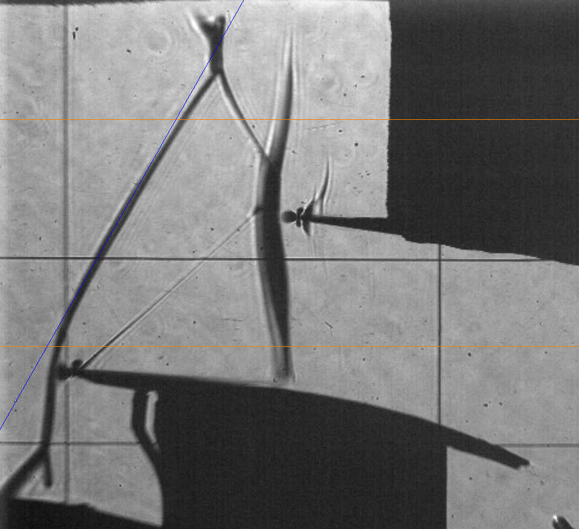

Inclined Shock Tracking
An advanced application of the Shock Tracking Library involves estimating the oblique shock angle. It is sometimes crucial to verify the inflow conditions and assess the unsteady behavior, such as changes in the inclination and oscillation domain. In this tutorial, the first leading edge shock from 100 schlieren images, is tracked as follows:
Run the following piece of code:
from ShockOscillationAnalysis import InclinedShockTracking as IncTrac if __name__ == '__main__': # Define the snapshots path with glob[note the extention of imported files] imgPath = r'test_files\raw_images\*.png' # iniate the inclined shock tracking module IncTrac = IncTrac() # use ShockTracking function IncTrac.ShockPointsTracking(imgPath, scale_pixels = False, tracking_V_range = [575, 200], # as not scaled tracking reference values in pixels nPnts = 9, # number of slices inclination_info = 110, # width of each slice preview = True, # to preview the final setup before proceeding slice_thickness = 4, # number of vertical pixels to be be averaged for each slice points_opacity = 0.5, # displayed tracked points transparency avg_preview_mode = 'avg_ang', # to display the estimated shock angle for each snapshot avg_show_txt = True, # to display the estimated shock angle value avg_txt_Yloc = 650, # y-location of the estimated angle value in pixels avg_txt_size = 30, # font size of estimated angle value in pt osc_boundary = True, # to display the oscilation domain )
The spacified
tracking_V_rangeis reviewed, and the estimated shock line is asked:
Press the left mouse button and drag to draw a line. Two lines will appear: the bold red line represents the start and end mouse locations, and the blue line represents the full line. Left-click again to confirm flowed by any keyboard key to close the preview window or right-click to remove the line and try again.

The software will track the shock and show results as follow:
Img Shape is: (900, 960, 3) Screen resolution: 1920, 1080 Vertical range of tracking points starts from 575.00mm to 200.00mm in pixels from 200px to 575px registered line: [(404, 0), (0, 713), -1.763157894736842, 713.8684210526316] Shock inclination test and setup ... ✓ Importing 100 images ... [====================] 100% Shock tracking started ... ✓ Plotting tracked data ... info.: For memory reasons, only 20 images will be displayed. note: this will not be applied on images storing [====================] 100% Angle range variation: [59.02,62.44], σ = 0.69 Average inclination angle 60.67 degAnd the 20 images are displayed, among of them


{kind=link}